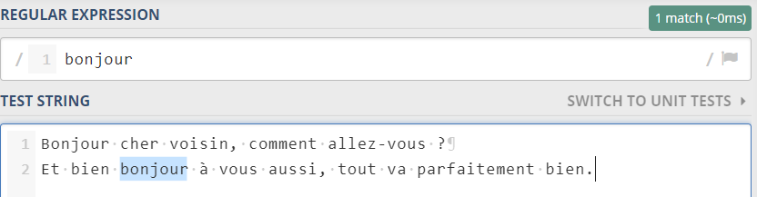
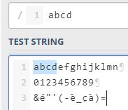
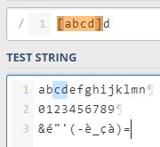
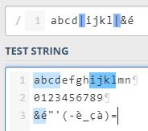

Dojo Regex
Auteurs : Rémi Fruteau de Laclos, Rémi Boussu
Les RegEx permettent de décrire un motif de correspondance

Il y a de nombreux moteurs d’expressions régulières
Tous n'implémentent pas toutes les specifications

Même avec de l'expérience
les grandes RegExp sont dures à lire```js
const regExp = /^(([^<>()\[\]\\.,;:\s@"]+(\.[^<>()\[\]\\.,;:\s@"]+)*)
|(".+"))@((\[[0-9]{1,3}\.[0-9]{1,3}\.[0-9]{1,3}\.[0-9]{1,3}])
|(([a-zA-Z\-0-9]+\.)+[a-zA-Z]{2,}))$/;
```

Je vous recommande pour les exercices à suivre d'avoir au moins regex101 d'ouvert
Par défaut la regex va tenter de matcher
tous les caractères exactement
Sauf que cela ne suffisait pas pour décrire
des ensembles, sous-ensembles, et avoir
un peu de logique
Du coup, il y a beaucoup de caractères spéciaux
qui ne peuvent pas être utilisés directement
Pour matcher dessus, il faut les échapper avec un \
Les ranges
[abcd]
[a-d]
[^a-d]
Les ranges décrivent un ensemble et sont encadrés par des []
Exemple : [abcd]
Je veux matcher un caractère parmi ceux-ci : abcd
Il est également possible de décrire un ensemble avec la syntaxe [debut-fin]
Exemple : [a-d]
Je veux matcher un caractère entre a et d
Les ranges [debut-fin] fonctionnent
avec les numéros de caractères unicode
Exemple : [あ-ゖ]
Je veux matcher un caractère entre le caractère あ de code unicode 12354 et le caractère ゖ de code unicode 12438
Pour avoir la liste des caractères et de leurs index, ce site est pas mal
Il existe aussi l'opération inverse : matcher un caractère qui ne fait pas parti d'un ensemble
Cela s'écrit de la manière suivante : [^debut-fin]
Exemple : [^a-d]
Je veux matcher un caractère qui ne se situe pas entre a et d
Un [] supporte très bien de multiples ranges
Exemple : [a-defg0-9]
[^a-deEfFgO-Z]
Les méta-séquences
. \w \W \d \D
Une métaséquence est un alias pour un ensemble
Par exemple \d correspond à un ensemble décrivant un chiffre
Selon les implémentations, cela peut équivaloir à [0-9]
Mais attention, en python3 par exemple \d matche aussi les autres numériques dans d'autres langages comme ٠١٢٣٤٥٦٧٨٩
Métaséquence connues :
. : N'importe quel caractère sauf fin de ligne
\d : un chiffre
\D : un caractère non-chiffre
\w : un caractère alphanumérique
\W : l'inverse de \w
Les métaséquences peuvent être utilisées dans un []
Exemple : [\W\d]
Ou
|
Par défaut, les regex font un "ET"
/abcd/ : je veux matcher a ET b ET c ET d

/[abcd]d/ : matche un caractère parmi abcd ET d

Avec | on introduit la notion de "OU"

Flags
g m i
Les ancres
^ $
Il y a 2 ancres :
^ début du texte
$ fin du texte
Si le flag m est mis, alors les ancres passent en mode par ligne
^ début de la ligne
$ fin de la ligne
Les quantifieurs
+ * {1,5} {5} ?
Les quantifieurs se mettent après :
Un caractère /a+/
Un groupe /(ab)+/
Un ensemble /[ab]+/
+ "1 et plus"
* "0 et plus"
{5} "5 exactement"
{5,8} "de 5 à 8"
? "0 ou 1"
Lazy VS Greedy
?
Par défaut, les quantifieurs + et * sont dit Greedy
Cela signifie qu'ils vont matcher autant de caractères que possible avant d'arriver à la prochaine contrainte
A l'inverse, si on rend un quantifieur Lazy, il s'arrêtera à la première occasion
L'opérateur permettant de rendre un quantifieur lazy est ?
Exemple : /[a-z]+\d/